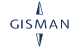
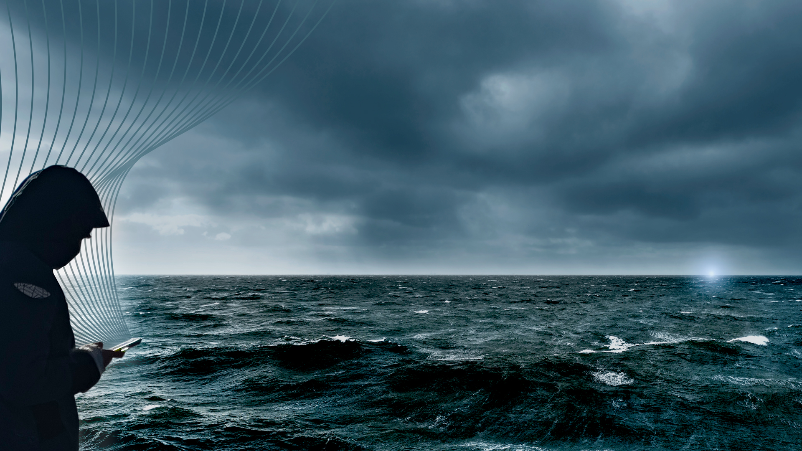

For decades, the mission of maritime buoyage has remained unchanged: ensuring safe navigation routes and protecting maritime activities by clearly marking hazards at sea. However, in today’s digital era, a new transformation is underway. The Internet of Things (IoT) is fundamentally reshaping how buoys and beacons operate, are monitored, and interact. At GISMAN, we actively support this transition toward connected, more efficient, and more sustainable aids to navigation.
Historically, maintaining operational performance of marine aids to navigation relied on inspections at sea and onshore, requiring significant human, nautical, and logistical resources.
Today, thanks to IoT, buoys are becoming intelligent and enable proactive management of marine aids to navigation. They can communicate their position in real time, along with their operational parameters, and can even transmit environmental and weather data when equipped with dedicated sensors.
The integration of sensors and connected communication systems offers new possibilities:
GISMAN’s range of marine signal lights integrates the latest IoT technologies to transmit data to a dedicated web portal through various communication options:
Data transmission is secured to ensure reliability and confidentiality.
All data can be accessed via GISMAN’s dedicated web platform:
IoT at sea brings decisive advantages:
Smart buoyage represents a new way of approaching maritime safety and sustainable ocean management. Thanks to IoT and robust communication systems, each buoy becomes an active component of the digital and ecological transition.
By placing innovation, connectivity, and eco-responsibility at the core of its solutions, GISMAN supports ports, maritime authorities, and local communities in their transition toward the buoyage of the future: connected, sustainable, and fully focused on ensuring safety for future generations.
← Back to blog